DIY Wiring
72-Chip Pure White Rock Lights
- 72 LED Chip
- 14 W
- Pack Of 4
$45 pack of 4
Rock Lights · Mesa, AZ
We make our own rock lights in pure white, RGBW color and white-and-amber switchback, and we install them at our shop in Mesa. Order a kit and wire it yourself, or drop your truck off and pick it up lit.
5.0★ from 33 reviews · installed in Mesa · kits ship anywhere
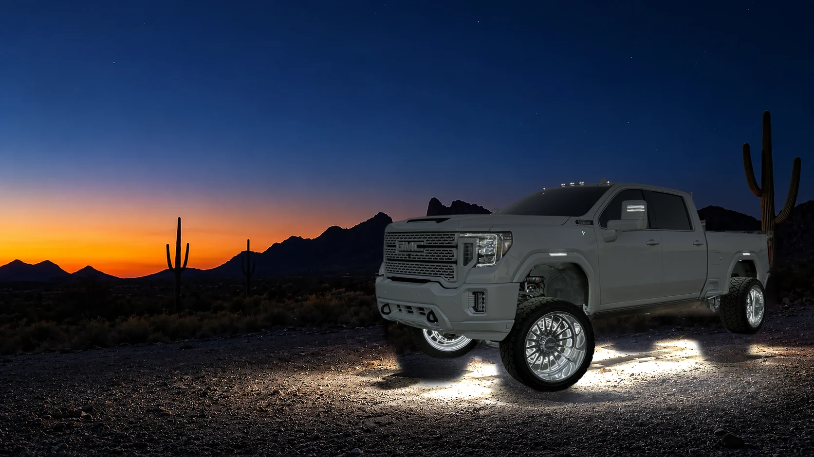
Rock lights are small sealed LED lights that mount under a vehicle and point at the ground. Off-road drivers started using them to see the rocks under their tires on night trails, which is where the name comes from.
On a truck in town they do two jobs. They light up the ground around the truck so you can see where you're stepping, parking or hooking up a trailer, and they make the truck stand out in a dark parking lot. Most of our customers want both.
A set usually goes in the wheel wells first, two per well, then along the sides and bumpers as you add more. The more lights you run, the less shadow is left under the truck.
We sell five rock lights. The biggest differences are the color, how they wire up, and whether you buy them in packs or by the light count.
| Light | Color | Wiring | Sold As | Price |
|---|---|---|---|---|
| 72-chip pure white | White | DIY | Pack of 4 | $45 a pack |
| 84-chip pure white | White | DIY | Pack of 4 | $55 a pack |
| 219-chip pure white kit | White | Kit | 4 to 24 lights | $240 to $920 |
| RGBW color kit | Any color + white | Plug and play | 4 to 20 lights | $205 to $705 |
| 112-chip switchback kit | White + amber | Plug and play | 4 to 20 lights | $200 to $700 |
Plug and play kits come with the module, remote and Bluetooth app, and they're waterproof.
Pure white is what most trucks run, and it's the color you can leave on while driving in Arizona. We make it in three sizes.
The 72-chip comes in a pack of four with rubber pads and mounting hardware. The 84-chip is our brightest light you wire yourself, also in packs of four. Both have about 11 inches of wire on each light, and you wire them together, so they suit someone comfortable with a crimp tool or anyone who books the install.
The 219-chip is our newest pure white light, sold as a kit by light count from 4 to 24.
$45 pack of 4

$55 pack of 4

$240 to $920 4 to 24 lights
The RGBW kit uses a 44-chip light that does red, green, blue and a true white. You pick the color from your phone with the Bluetooth app or the remote, so the same truck can be white on the road and green or red at a show.
It's full plug and play with the module, remote and app, it's waterproof, and it comes in kits of 4 to 20 lights. The red, blue and green photos are the same GMC running 20 lights.
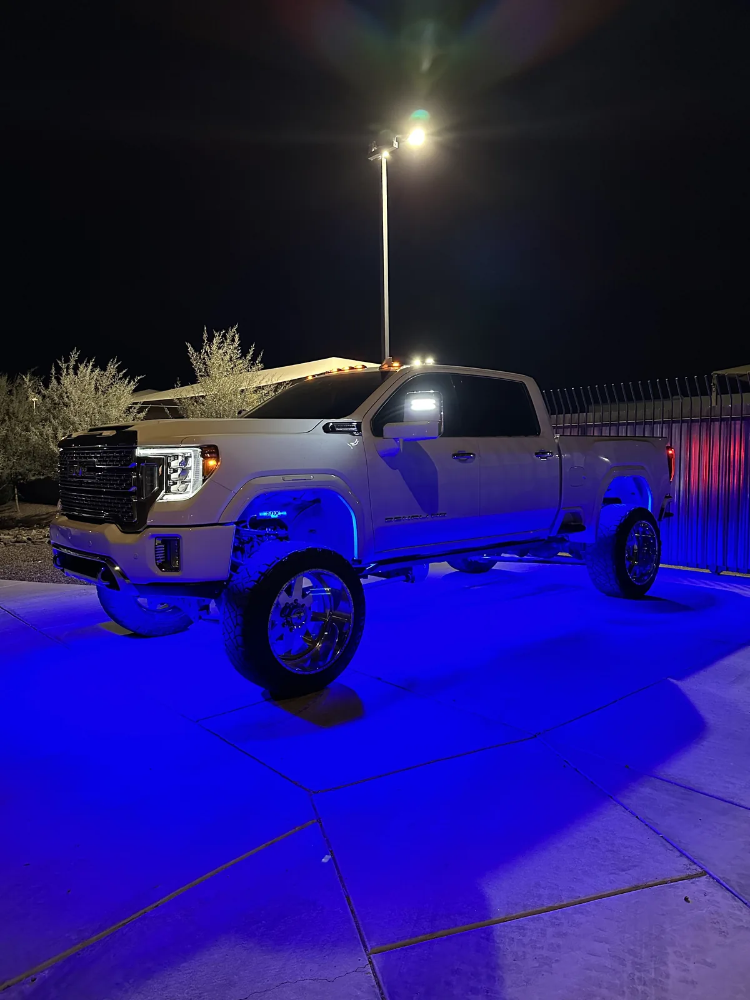
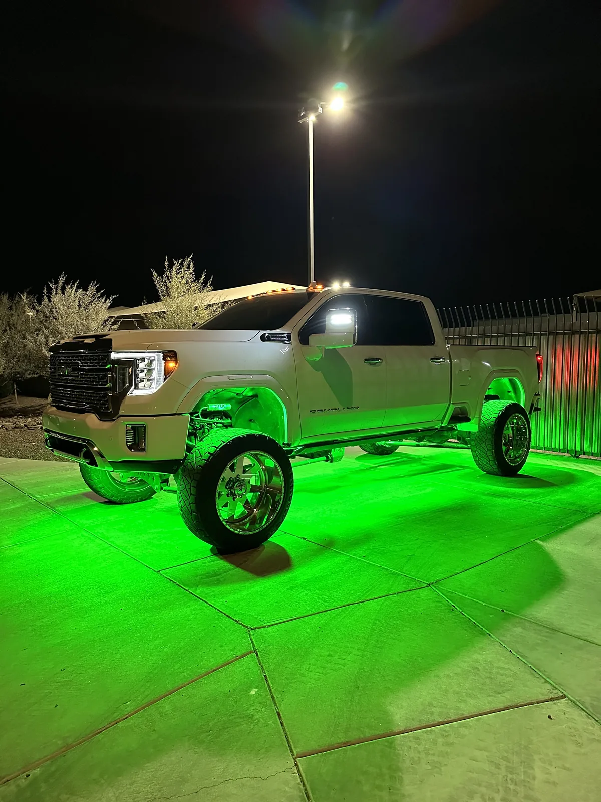
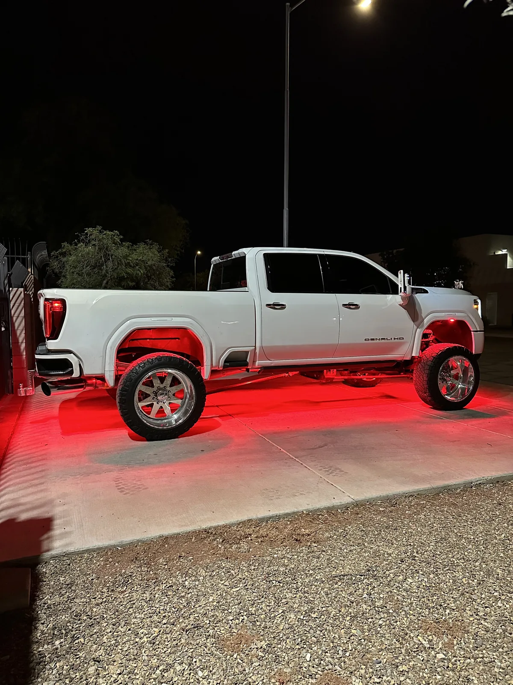

$205 to $705 4 to 20 lights
Start with two in each wheel well. That's 8 lights, and it's the minimum we'd put on a truck. From there you add lights along the sides, then the bumpers, then the grille and down the middle. These are real ITM installs at each count, with where every light went.
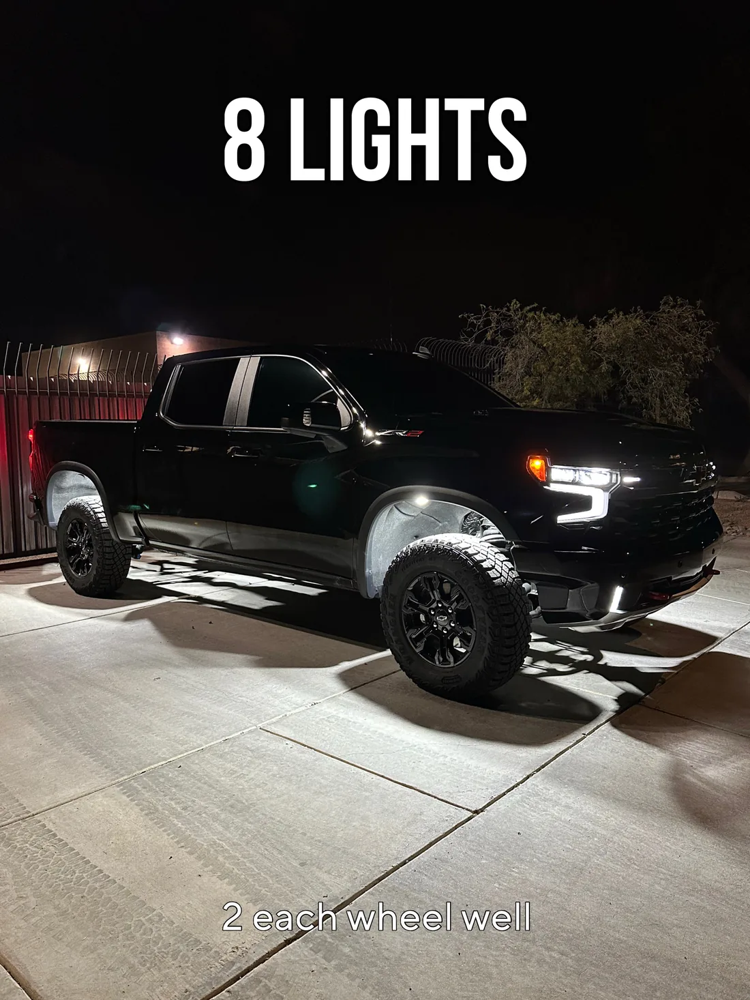
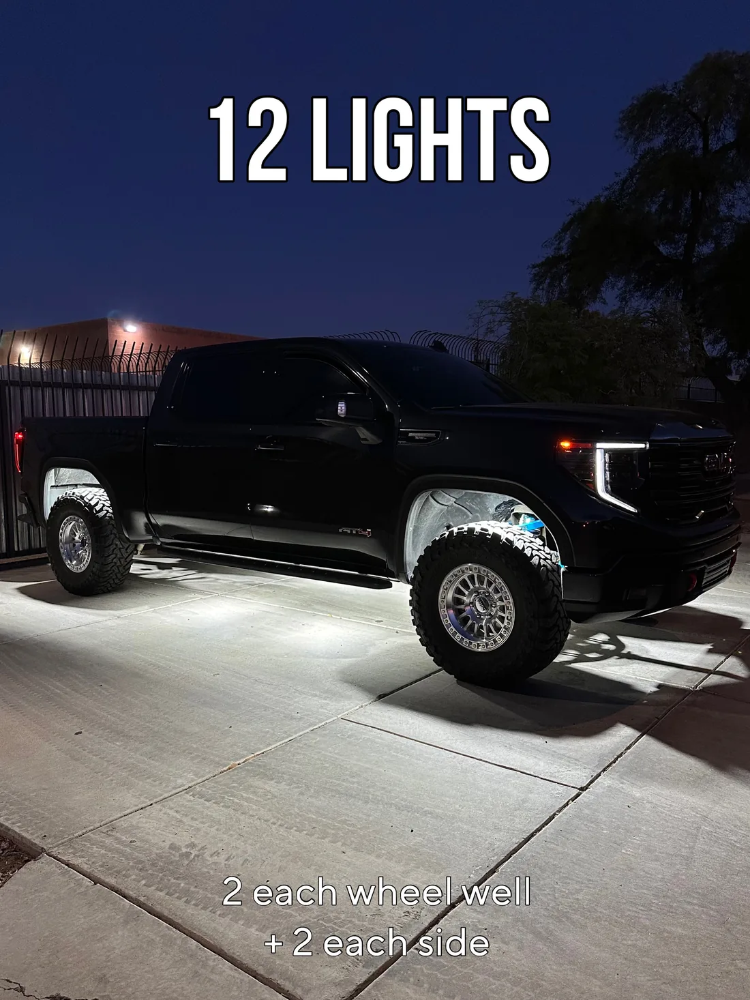
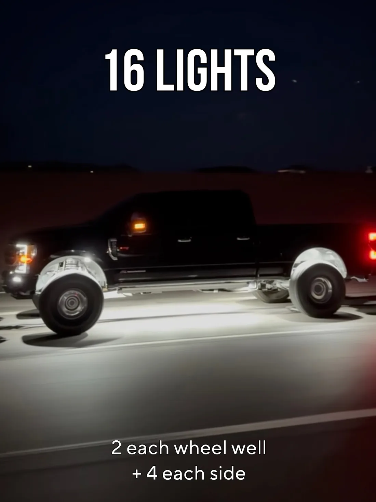
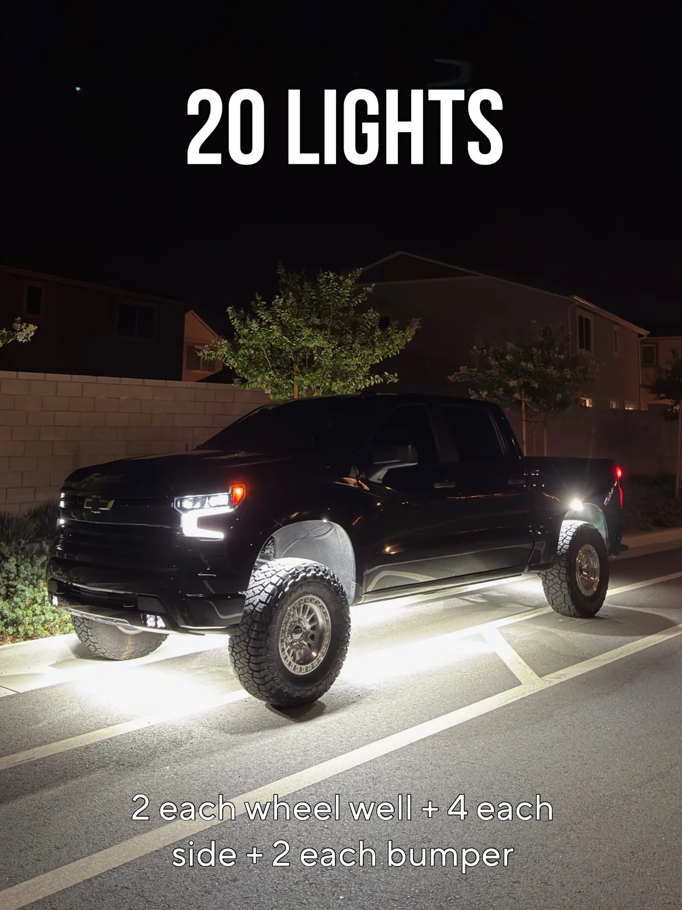
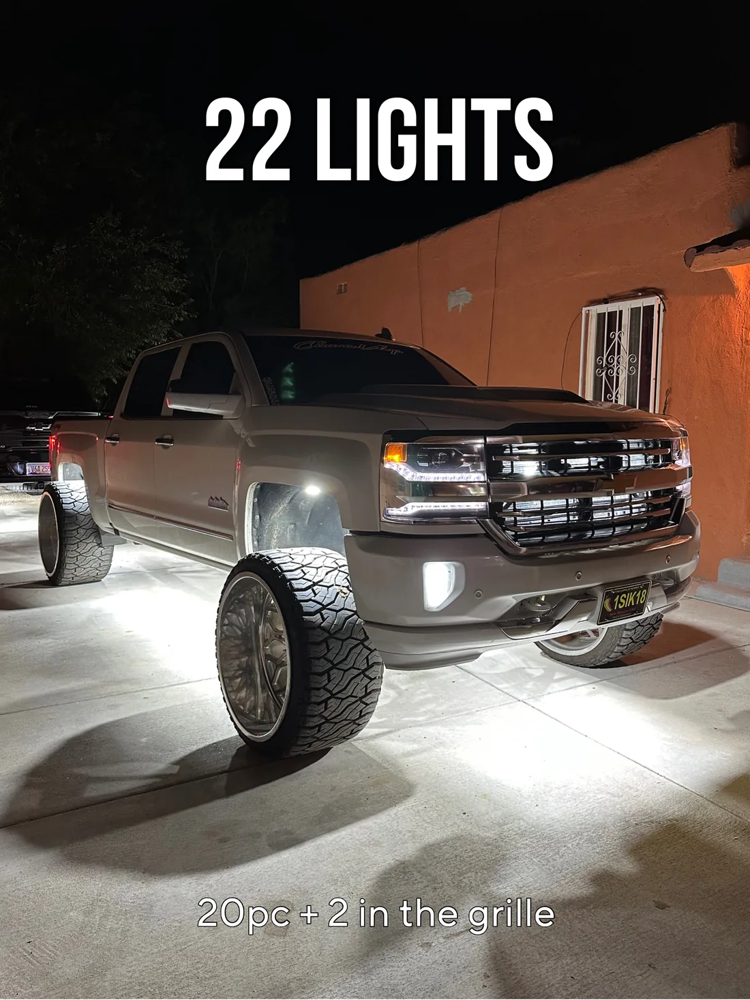
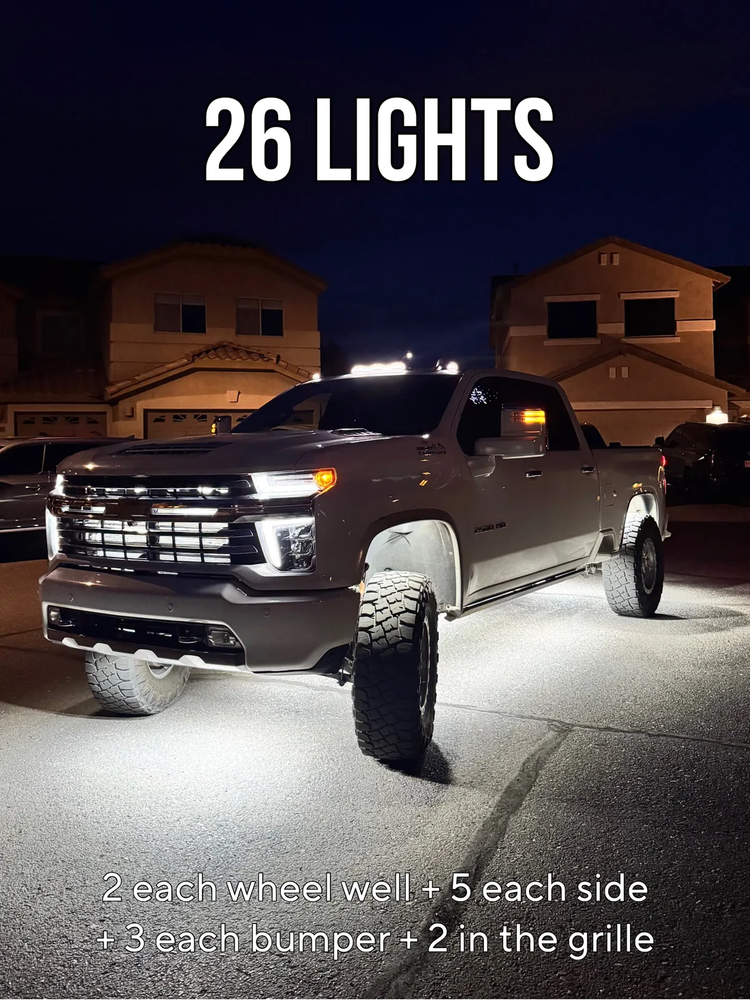
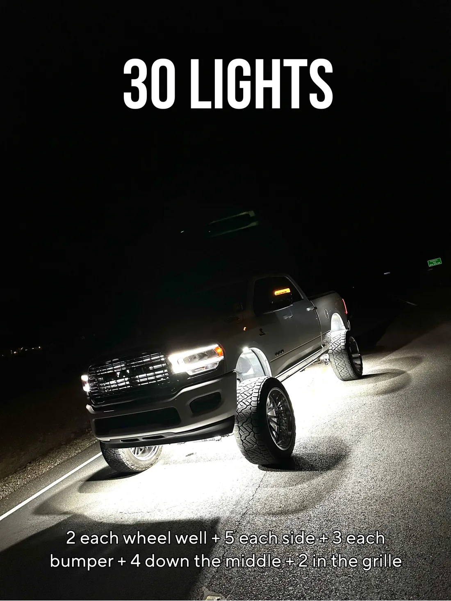
Our pure white packs come in fours, so round up to the next pack. 20 lights is five packs. The kits are sold by the light count you pick.
Rock lights either bolt to the frame or stick to it. The 72-chip pack includes mounting hardware for bolting them on. If you'd rather not drill, our magnetic mounts are 1/8-inch CNC-cut aluminum, made in the USA, and fit the 72 and 84-chip lights. They're $10 each.
On an install we pick the mount that suits your frame and where each light needs to point.

$10 each
Arizona's lighting rules for this live in A.R.S. 28-947. Three parts of it matter for rock lights, underglow and accent lighting on a road.
In practice that means solid white is the everyday setting, and colors and flashing modes are for when you're parked. Read the statute yourself at azleg.gov. This is a plain-English summary, not legal advice.
Every light we put on a vehicle gets the same four things. None of them are extras, and none of them depend on who's working that day.
White is the safe setting on the road. Arizona doesn't allow red or blue light visible from the front of a vehicle on a highway, and flashing lights are only allowed in a few cases, like turn signals and parked warning lights. Save colors and flashing modes for when you're parked.
Our pure white packs are $45 and $55 for four lights. The 219-chip kit runs $240 to $920, the RGBW kit $205 to $705 and the switchback kit $200 to $700, depending on how many lights you pick. Install labor is quoted before any work starts.
Two per wheel well is how we start almost every truck. That's 8 lights before you add any to the sides or bumpers.
The 72 and 84-chip packs are DIY wiring. The RGBW and switchback kits are plug and play with a module, remote and app. Or book an install and we wire any of them.
Lights are built to order. Allow 2 to 3 weeks for processing and shipping.
Yes. Our lights have gone on trucks, a Sprinter van, a RZR and even a riding mower. Anything with a frame to mount to can run them.
Installs In Mesa
Bring our kit or your own lights. We text you to confirm your drop-off and quote.